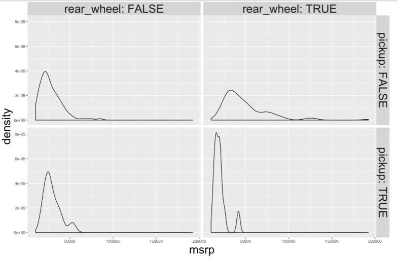

2 Exploratory Data Analysis
2.1 Exploring categorical data
一个变量有多少层级
> levels(comics$align)
[1] "Bad" "Good" "Neutral"
[4] "Reformed Criminals" Note: NAs ignored by levels() function
2.1.1 Counts vs Proportions
Counts:
> tab_cnt <- table(comics$id, comics$align)
> tab_cnt
Bad Good Neutral Reformed Criminals
No Dual 474 647 390 0
Public 2172 2930 965 1
Secret 4493 2475 959 1
Unknown 7 0 2 0Conditional proportions:
# Condition on the rows (i.e. rows sum to 1)
> prop.table(tab_cnt, 1)
Bad Good Neutral
No Dual 0.314 0.428 0.258
Public 0.358 0.483 0.159
Secret 0.567 0.312 0.121
Unknown 0.778 0.000 0.222
# Condition on the columns (i.e. columns sum to 1)
> prop.table(tab_cnt, 2)
Bad Good Neutral
No Dual 0.066331 0.106907 0.168394
Public 0.303946 0.484137 0.416667
Secret 0.628743 0.408956 0.414076
Unknown 0.000980 0.000000 0.000864Conditional bar charts:
# Plot proportion
ggplot(comics, aes(x = align, fill = gender)) +
geom_bar(position = "fill") +
ylab("proportion")
2.2 Exploring Numerical Data
2.2.1 Distribution of one variable
Marginal distribution
tab_cnt <- table(comics$id, comics$align) Conditional distribution
# Faceting
ggplot(comics, aes(x = id)) +
geom_bar() +
facet_wrap(~align)
# Filtering
# Dotplot
ggplot(data, aes(x = weight)) + geom_dotplot(dotsize = 0.4)
# Histogram (with binwidth)
ggplot(data, aes(x = weight)) + geom_histogram(binwidth = 3) + facet_wrap(~spam)
# Density plot (with bandwidth)
ggplot(data, aes(x = log(exclaim_mess + .01), fill = spam)) + geom_density(bw = 5, alpha = .3)
# Boxplot
ggplot(data, aes(x = 1, y = weight)) + geom_boxplot()
# Side-by-side boxplot
ggplot(common_cyl, aes(x = as.factor(ncyl), y = city_mpg)) + geom_boxplot() 2.2.2 Visualization in higher dimensions
Plots for 3 variables
ggplot(cars, aes(x = msrp)) +
geom_density() +
facet_grid(pickup ~ rear_wheel, labeller = label_both)
Higher dimension plots
- Shape
- Size
- Color
- Pattern
- Movement
- x-coordinate
- y-coordinate
2.3 Numerical Summaries
2.3.1 Measures of Center and Variability
Center
mean()median()mode()
groupwise
# group_by()
life %>%
group_by(continent) %>%
summarize(mean(expectancy),
median(expectancy))Variability
- standard deviation:
sd() - variance:
var()
即 sum((x - mean(x))^2) / (n -1) - interquartile range:
IQR()
即 distance between the two numbers that cut off the middle 50% of your data (the height of box in boxplot) - range:
diff(range())
即 max - min
In case of extreme observations, IQR() depicts the most accurate spread.
2.3.2 Shape and transformations
Modality
- Unimodal
- Bimodal
- Multimodal
- Uniform
Skew
- Right-skewed
- Left-skewed
- Symmetric
Plotting without Outliers
- 用log()减弱outliers的影响
ggplot(life, aes(x = income, fill = west_coast)) +
geom_density(alpha = .3)
ggplot(life, aes(x = log(income), fill = west_coast)) + geom_density(alpha = .3)- 直接定义及去掉outliers
life <- life %>%
mutate(is_outlier = income > 75000)
life %>%
filter(!is_outlier) %>%
ggplot(aes(x = income, fill = west_coast)) +
geom_density(alpha = .3)2.3.3 Zero inflation strategies
- Analyze two components separately
There are two mechanisms going on: one generating the zeros, and the other generating the non-zeros.
- Collapse into two-level categorical variable
A simpler approach: think of the variable as actually only taking two values, zero or not-zero, and treating it like a categorical variable.